두 독립 assistant의 원 영역을 보존했습니다. Root가 8카드와 3개 q8 맥락을 실제 확인했습니다. 영역은 약한 시각 근거이며 교정 keypoint·물리 gold·새 E 정답·학습 채택이 아닙니다.
상판 외곽 코너와 바로 아래 블록의 접속 부위가 함께 보인다. A/C 영역의 상하 범위 차이를 보존한다.
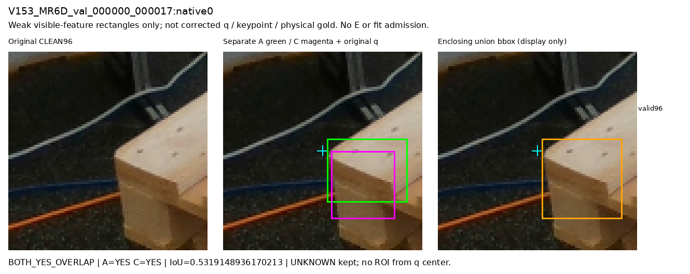
영상 하단 padding 위의 상판 끝·옆면 노출 조각이다. A가 더 넓고 C는 끝면 일부를 표시했다. 정확한 숨은 vertex나 전체 끝면을 인증하지 않는다.
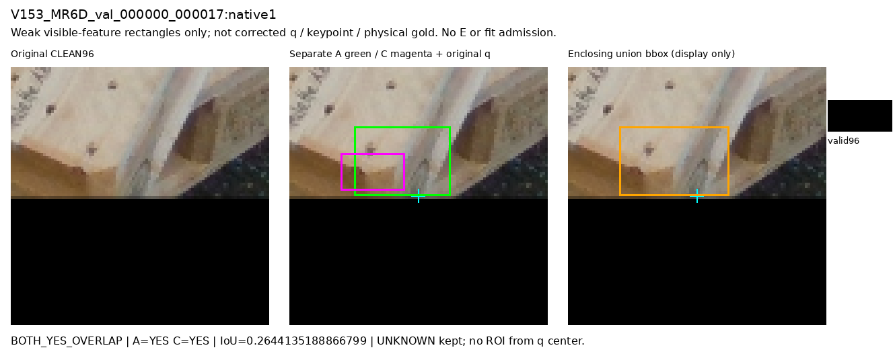
앞 왼쪽 블록의 노출 세로면과 끝 윤곽이 같은 국소 부위 복합체를 지지한다.
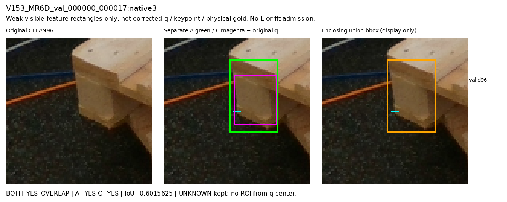
뒤 왼쪽 상판 끝이 검은 스탠드와 분리되어 보인다. C 영역이 더 작지만 같은 노출 끝 주변이다.
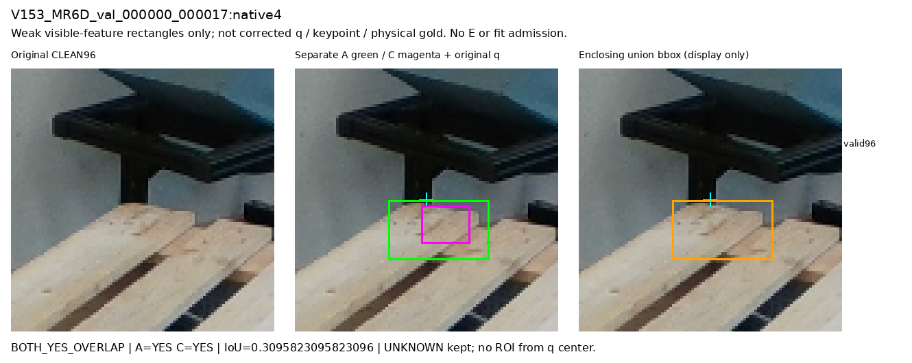
회색 통과 별개로 앞 오른쪽 지지블록 끝과 상판이 노출되어 있다.
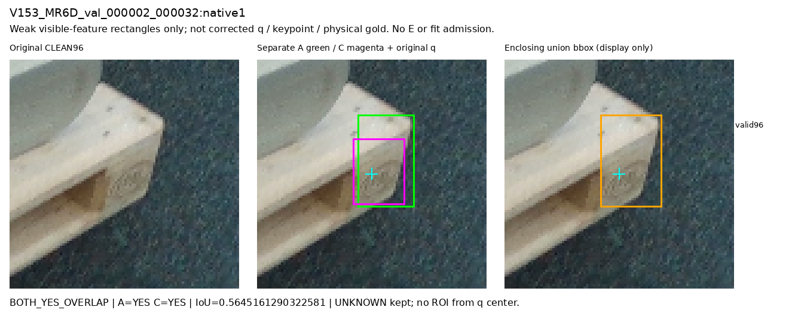
앞 왼쪽 상판 끝과 블록 상단의 노출 코너이다. q가 바깥에 있어도 원 feature는 보인다.
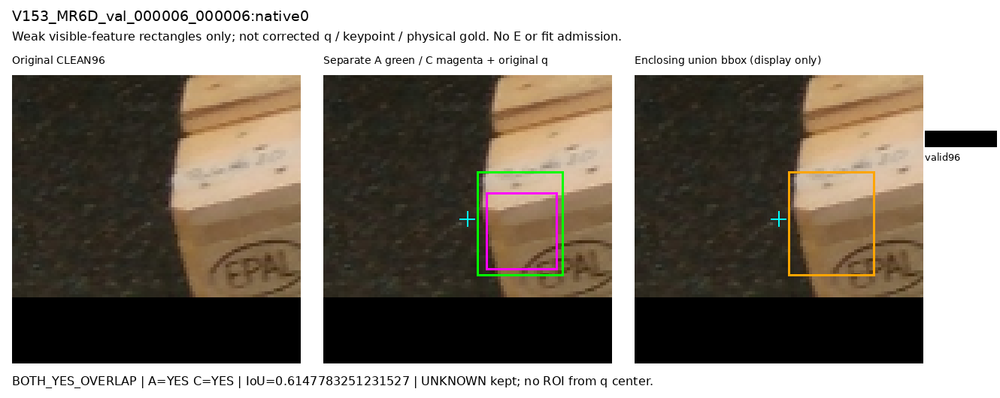
앞 오른쪽 상판 끝과 블록 바깥면이 노출되어 있다. q와 feature의 위치 차이는 고치지 않는다.
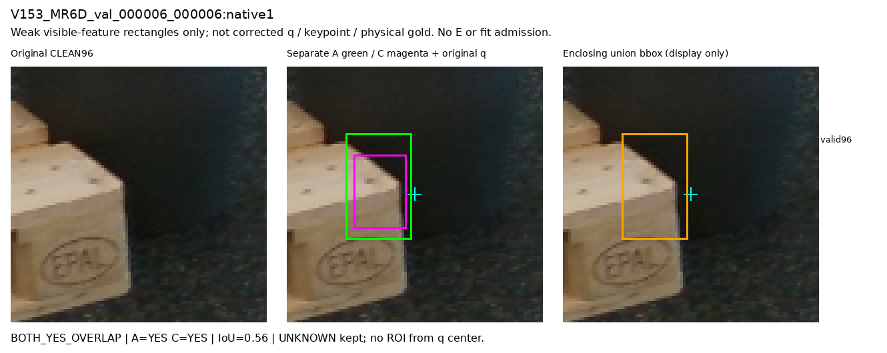
앞 오른쪽 블록의 아래/바깥 끝과 노출 면을 포함한다. 로고가 포함된 coarse영역이며 정확한 코너 segmentation이 아니다.
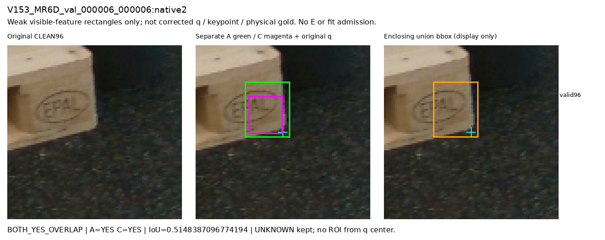
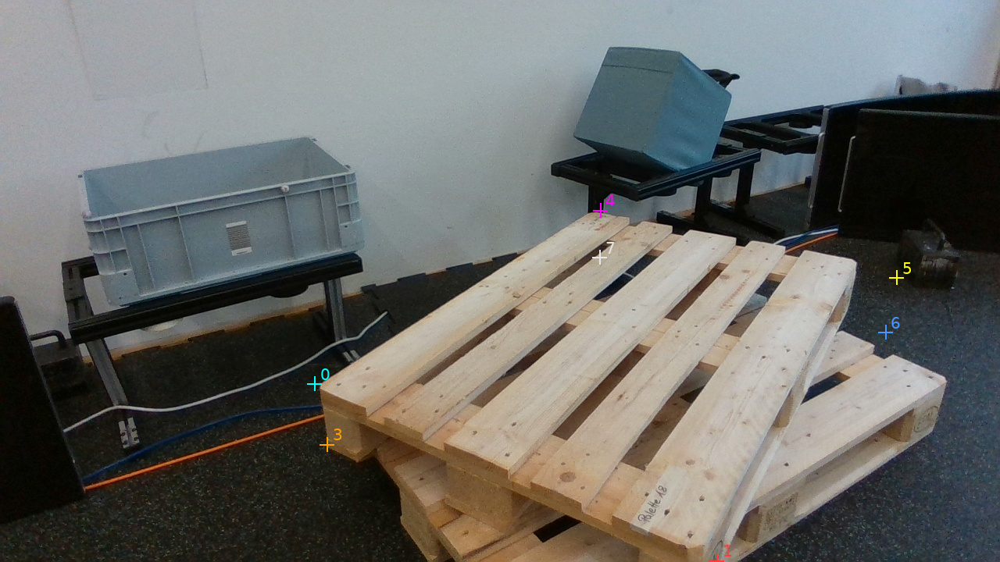
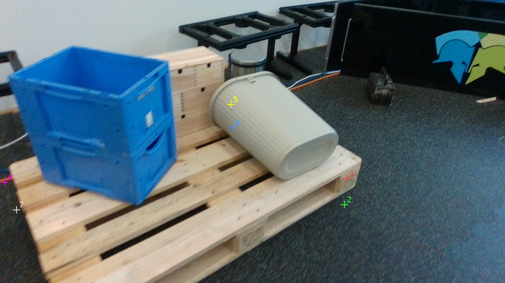
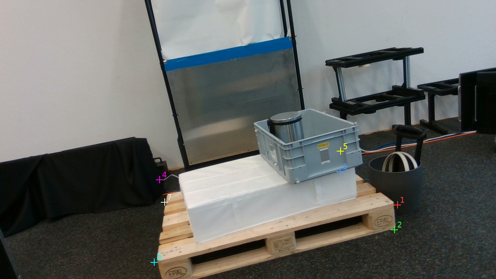